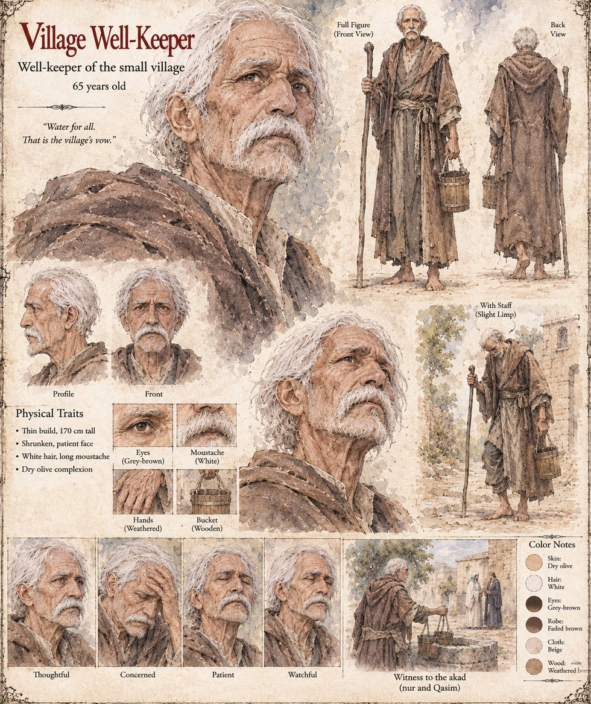

The Village Well-Keeper
Well-keeper of Nur's village · unnamed · first witness to the akad between Nur and Qasim · sixty-five by the sheet
The well-keeper of the small village where Nur lives out her life as a widow of independent means, and one of the two witnesses, with a passing grain-merchant, to the akad by which the dinar passes from her to Qasim. He is the second well-keeper to witness an akad over the coin; the first, the keeper of the well at Malik and Amina's wedding, pronounced the marriage akad complete and binding. The manuscript gives this one no name.
The sheet draws him thin and shrunken, patient-faced, with white hair and a long white moustache, grey-brown eyes and dry olive skin, in a faded brown hooded robe over a grey-green tunic, barefoot, with a walking stick and a wooden bucket on a rope, and a slight limp in the left leg. Its expression panels run thoughtful, concerned, patient and watchful, and its last scene, Witness to the akad (Nur and Qasim), shows him at the well with two figures talking behind him. The sheet's pull-quote, Water for all. That is the village's vow, is the sheet's own. The age of sixty-five and everything visual are the sheet's.